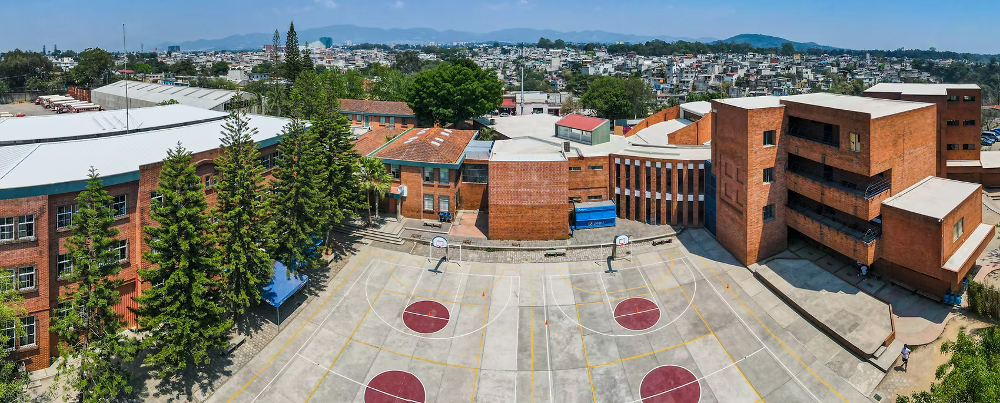
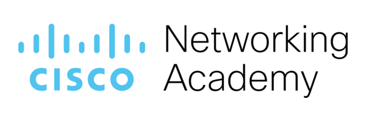
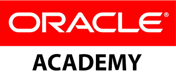
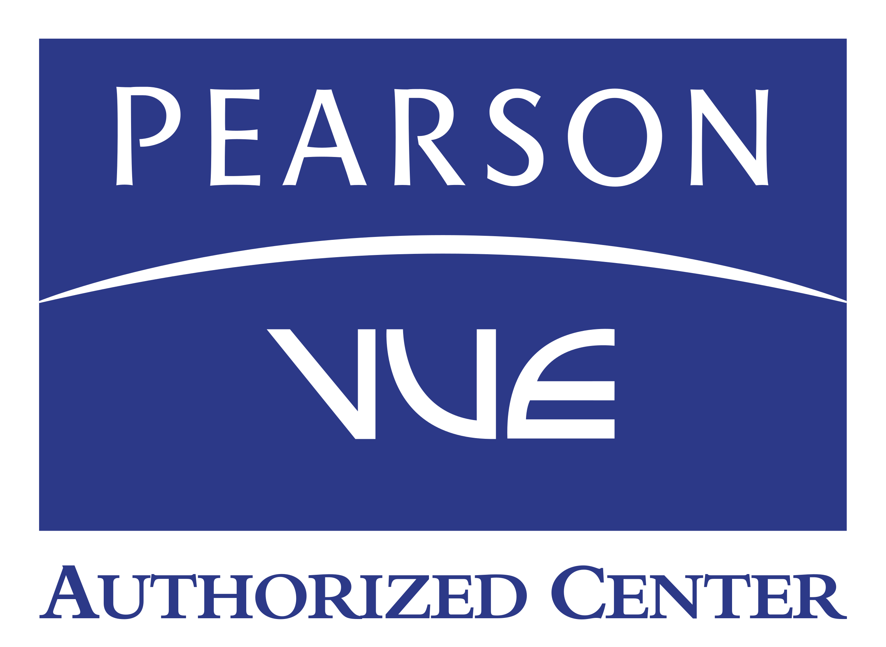
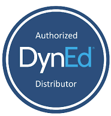
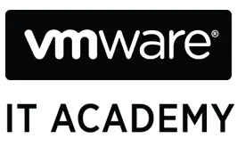
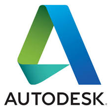

En
Fundación Kinal
SOMOS SUPERACIÓN
PARA ADULTOS

En

En
En

Kinal es un Centro Educativo privado, no lucrativo, dirigido a la formación técnica profesional de jóvenes y adultos, de beneficio colectivo y asistencia social en favor de los sectores más necesitados de la comunidad.
Nuestro valor fundamental es enseñar a realizar el trabajo bien hecho, que sea la base de la superación de alumnos y el medio para servir a los demás.

Kinal ofrece su programa de Educación General Básica para todos aquellos jóvenes que buscan una orientación técnica y excelencia académica.

Durante 3 años se prepara al joven de forma técnica y académica, el egresado estará listo para trabajar en el ramo técnico de la especialidad que eligió estudiar; el título obtenido le permitirá ingresar a la universidad.

Dirigido al fortalecimiento de mandos medios y especialmente aquellos que han cursado una carrera técnica y desean continuar con estudios a nivel universitario. Estos estudios son avalados por la Universidad del Istmo.

Podemos diseñar conjuntamente el programa de formación profesional que mejor se adapte a tus necesidades de capacitación.

Contamos con más de 30 especialidades técnicas y tecnológicas que pueden favorecer tu crecimiento y/o tu inserción laboral.







Durante 2023 recibimos más de 600 solicitudes de trabajo para nuestros antiguos alumnos.


Cada donación que haces ayuda a la educación de un joven guatemalteco de escasos recursos a tener una educación de calidad.
ESCUELA TÉCNICA
CICLO BÁSICO
DIVERSIFICADO
TOTAL
Considero que mi rediseño puede ser más atractivo y funcional que el diseño original, ya que me enfoqué en mejorar la organización de la información y la experiencia del usuario. Implementé un diseño más moderno, limpio y visualmente agradable, con una navegación más intuitiva. Además, incorporé imágenes de los partners con un estilo diferente, ya que en la página original no resaltan lo suficiente y pasan desapercibidas.
infocet@kinal.org.gt
infobas@kinal.org.gt
infoets@kinal.org.gt
infotic@kinal.org.gt
6 avenida 13-54 zona 7, Colonia Landívar, 01007 Ciudad de Guatemala, Guatemala, C.A.
empleos@kinal.edu.gt
lesterguerra@kinal.org.gt
WhatsApp: 2216-0090